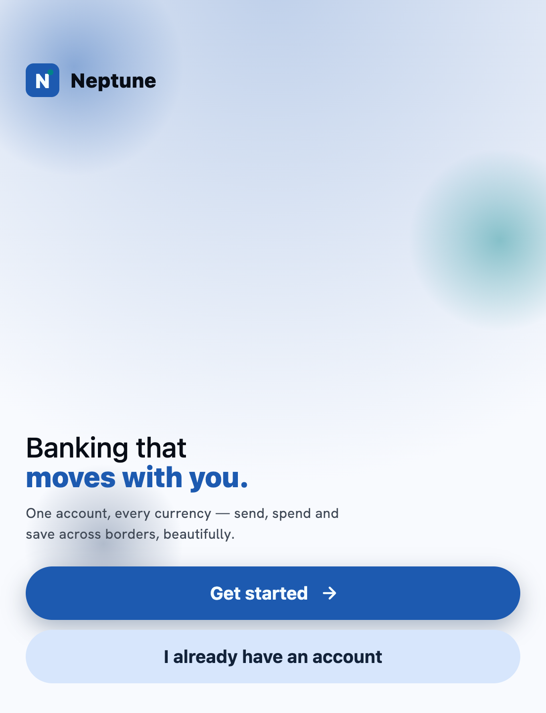
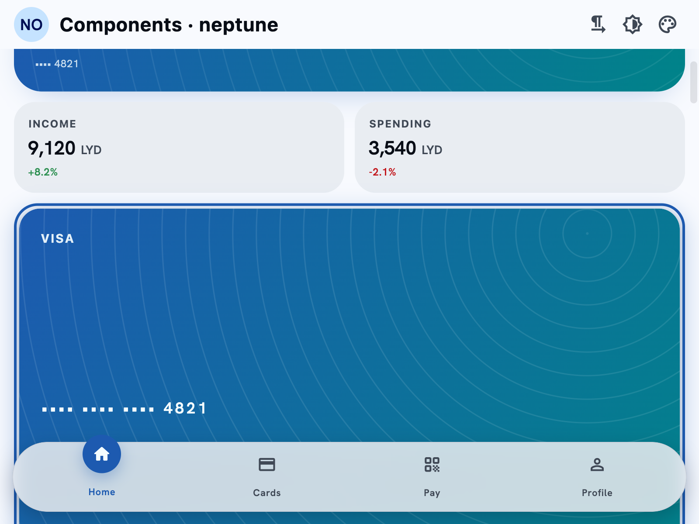
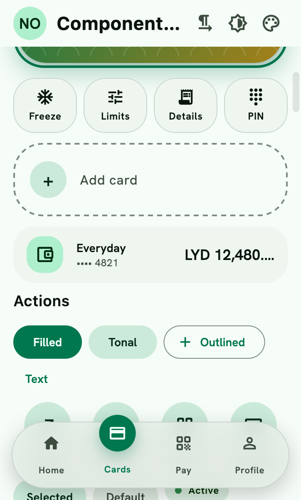
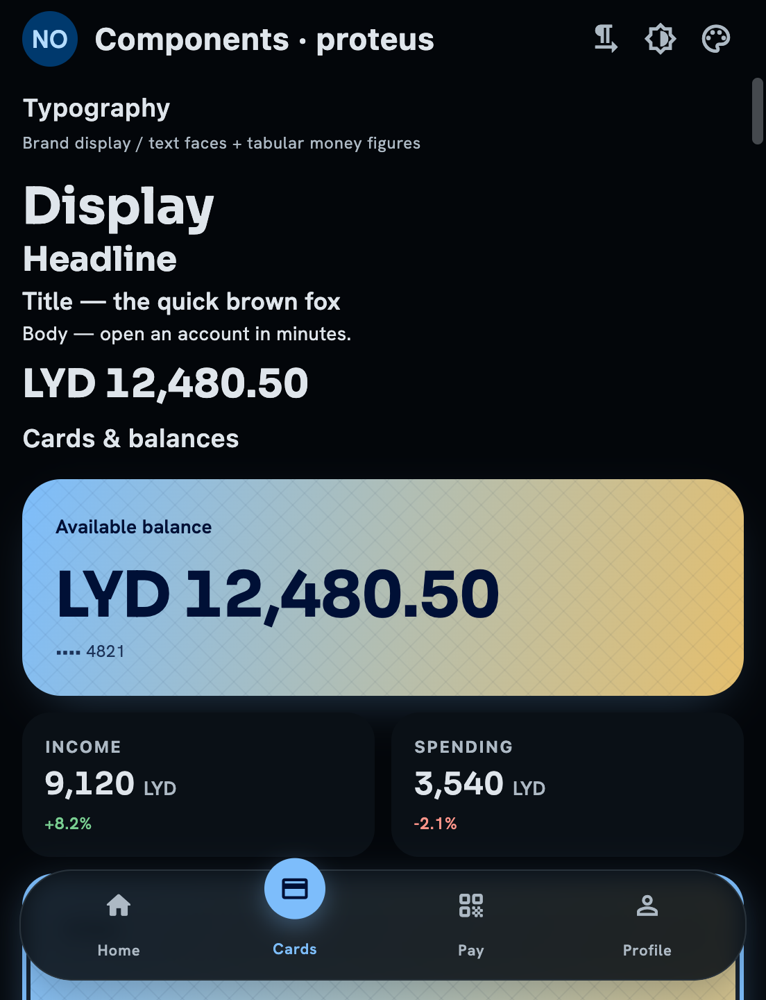
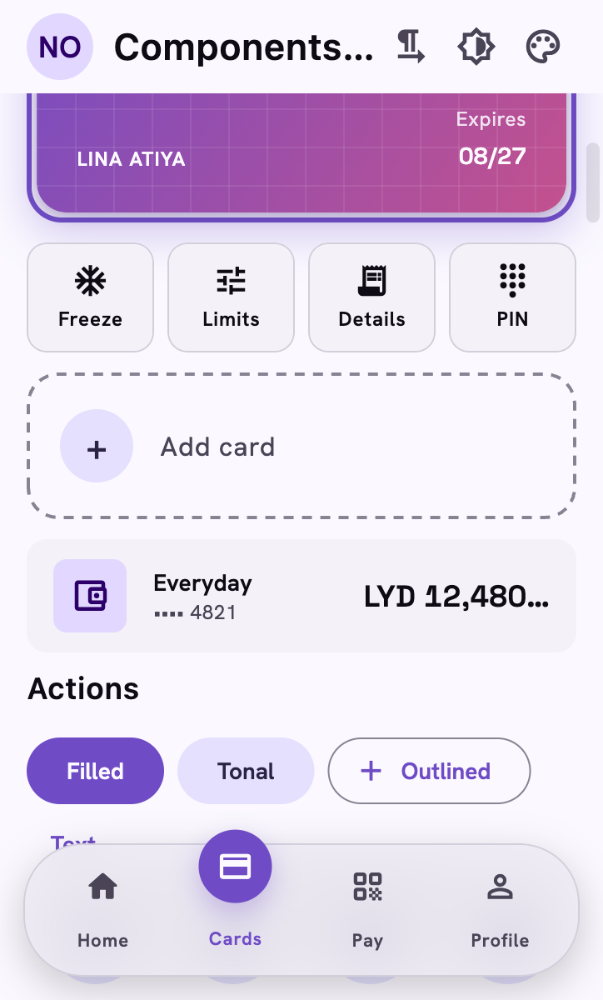
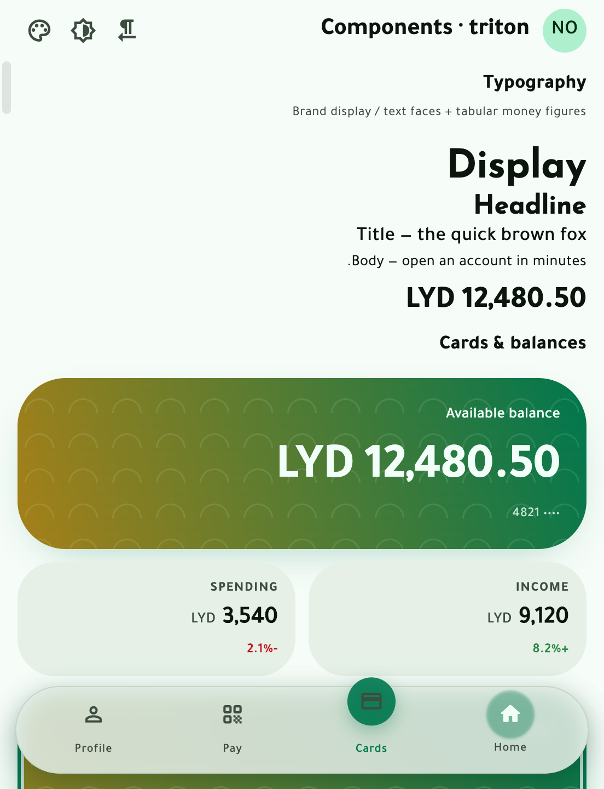
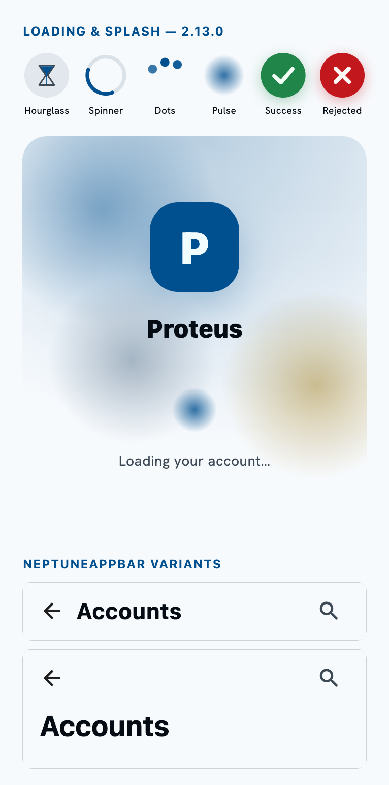

Every frame below is neptune_flutter_ui rendering in the actual
Flutter engine (captured from the render tree — no mockups). The same brandprint that drives
the web components drives these screens, byte-identically.
▶ Run it live in your browser pub.dev package source on GitHub ← Odyssey home







NeptuneStatusMotion's success/reject morph, NeptuneSplashScreen, and NeptuneAppBar's small/medium variants